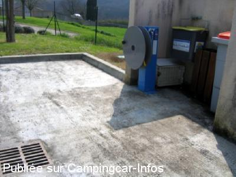

ASN = Aire de services avec stationnement nuit possible de :
BARDIGUES
(N° 214)
Accès/adresse :
D11
82340 BARDIGUES
82340 BARDIGUES
Latitude : (Nord) 44.03845° Décimaux ou 44° 2′ 18′′
Longitude : (Est) 0.8923° Décimaux ou 0° 53′ 32′′
Tarif : 2015
Stationnement gratuit
Services : 2 €
Type de borne : Artisanale
Services :


Possibilité repas
Autres informations :
Ouvert toute l'année
Eau coupée en période de gel
4 emplacements
Tel : +33(0)563 290 501
Le 03/08/2014 par Podcamper

Le 18/04/2007 par jele
Le 18/04/2007 par jele
Le 04/09/2005 par marcbintein
de
claire70
le 07/05/2015 :
Nous y avons dormi une nuit début mai. Nuit Calme.
Le restaurant ne fonctionne pas le samedi soir et le dimanche midi.
Nous y avons dormi une nuit début mai. Nuit Calme.
Le restaurant ne fonctionne pas le samedi soir et le dimanche midi.
de
Podcamper
le 03/08/2014 :
Stayed 27/7/14. Beautifully neat and well laid out aire with a lovely view. Pretty town, no commerce but a classy restaurant (closed Sunday nights so can't make a comment). Thank you to the commune for providing such a fabulous resource for campervanners.
Stayed 27/7/14. Beautifully neat and well laid out aire with a lovely view. Pretty town, no commerce but a classy restaurant (closed Sunday nights so can't make a comment). Thank you to the commune for providing such a fabulous resource for campervanners.
de
Stephane81
le 26/02/2012 :
eau en hors gel à cette saison.
Aire toujours aussi calme et propre.
Le village est sympathique, auberge fermée.
eau en hors gel à cette saison.
Aire toujours aussi calme et propre.
Le village est sympathique, auberge fermée.
de
roudaut
le 04/12/2011 :
02 11 11
de passage pour une nuit aire très bien indiquee et très propre joli petit village a recommander
02 11 11
de passage pour une nuit aire très bien indiquee et très propre joli petit village a recommander
de
guytsoun 17
le 18/08/2010 :
Nous avons passé 2 nuits la première semaine d'août et ajouter un commentaire serait une banalité. Les photos sont assez explicites, il faut absolument essayer le resto à l'entrée du village et laisser un commentaire sur le cahier dans la boite aux lettres à coté de la vidange des eaux noires. Aire parfaite, merci à la municipalité.
Nous avons passé 2 nuits la première semaine d'août et ajouter un commentaire serait une banalité. Les photos sont assez explicites, il faut absolument essayer le resto à l'entrée du village et laisser un commentaire sur le cahier dans la boite aux lettres à coté de la vidange des eaux noires. Aire parfaite, merci à la municipalité.
de
Domi
le 12/07/2010 :
Avons passé 2 nuits sur cette aire dont nous ne dirons que du bien.Merci beaucoup a Bardigues,nous reviendrons régulierement ici
Avons passé 2 nuits sur cette aire dont nous ne dirons que du bien.Merci beaucoup a Bardigues,nous reviendrons régulierement ici
de
Dangel
le 19/06/2010 :
Mérite bien les éloges qui lui sont faites. Merci à la commune.
Mérite bien les éloges qui lui sont faites. Merci à la commune.
de
Steph81
le 22/07/2009 :
Très belle aire. Nuit calme. Enceinte fermée et places délimitées. Un cahier est à votre disposition pour laisser un petit message dans une boite à lettres. Un boulanger semble passer mais il n'y a pas les horaires. Aires de jeux pour les enfants le long de la route et auberge au village.
Très belle aire. Nuit calme. Enceinte fermée et places délimitées. Un cahier est à votre disposition pour laisser un petit message dans une boite à lettres. Un boulanger semble passer mais il n'y a pas les horaires. Aires de jeux pour les enfants le long de la route et auberge au village.
de
Daniel Gibert
le 23/04/2009 :
Félicitations au conseil municipal. Tout est parfait. Emplacements intelligent, Vidandes accessibles, long tuyaux d'eau pour plein et rinçage, silence total, beau point de vue, boulanger 3 fois par semaine. Un modèle à méditer pour beaucoup de villes plus importantes.
Félicitations au conseil municipal. Tout est parfait. Emplacements intelligent, Vidandes accessibles, long tuyaux d'eau pour plein et rinçage, silence total, beau point de vue, boulanger 3 fois par semaine. Un modèle à méditer pour beaucoup de villes plus importantes.
de
Claireformatrice
le 22/06/2008 :
Aire super !! Calme, services, aires pour enfants à proximités, espace, tout ou presque :)
A recommander !
Merci à la municipalité qui a même pensé à ajouter le sigle des CC sur les panneaux de direction dans les alentours.
Aire super !! Calme, services, aires pour enfants à proximités, espace, tout ou presque :)
A recommander !
Merci à la municipalité qui a même pensé à ajouter le sigle des CC sur les panneaux de direction dans les alentours.
de
STLF 40
le 22/02/2008 :
De passage le samedi 16 février dernier, à 2 camping-cars, nous avons pu apprécier le calme de cet emplacement très bien aménagé. Si nous n'avons pu faire le plein d'eau à cause de protection face au gel, nous avons néanmoins fait les vidanges d'eaux usées et wc. Merci à la municipalité d'avoir créé cette aire possible pour 4 à 5 camping-cars. A recommander si vous êtes de passage dans la région où des villes et villages sont à visiter, notamment Auvillar, située à 5 km.
De passage le samedi 16 février dernier, à 2 camping-cars, nous avons pu apprécier le calme de cet emplacement très bien aménagé. Si nous n'avons pu faire le plein d'eau à cause de protection face au gel, nous avons néanmoins fait les vidanges d'eaux usées et wc. Merci à la municipalité d'avoir créé cette aire possible pour 4 à 5 camping-cars. A recommander si vous êtes de passage dans la région où des villes et villages sont à visiter, notamment Auvillar, située à 5 km.
de
vanhove raymond 59
le 21/10/2007 :
super l'aire de service et aussi les menus à l'auberge
super l'aire de service et aussi les menus à l'auberge
de
jele
le 18/04/2007 :
Toutes mes félicitations à la mairie. A citer en exemple pour les grandes villes qui ont un peu tendance à nous fuir. En plus il y a une aire de jeux à proximité.
Toutes mes félicitations à la mairie. A citer en exemple pour les grandes villes qui ont un peu tendance à nous fuir. En plus il y a une aire de jeux à proximité.